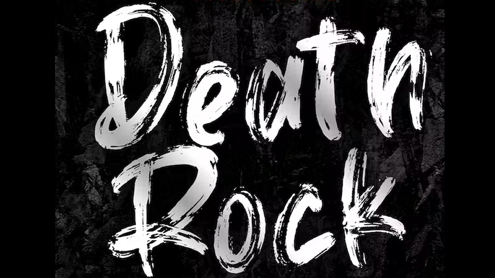

DEATH ROCK
Es un término usado para identificar a una rama del punk rock surgida en California durante los últimos años de la década de 1970 y principios de la década de 1980. Más tarde se fusionarían con el glam y el new wave influenciado por la escena musical de la sala de conciertos Batcave formando el rock gótico.
El origen del término death rock parece ser que aparece por primera vez en la década de 1950, cuando se usó para describir un género de rock and roll en el que los adolescentes cantaban acerca de las muertes trágicas de sus novios o sus novias por accidentes, suicidios, enfermedades, etc. «The Leader of the Pack» de The Shangri-Las es uno de estos ejemplos junto a Mark Dinning con «Teen Angel» o Ray Peterson con «Tell Laura I Love Her». «Last Kiss» de Frank Wilson, en 1964, fue la última canción de este género de rock and roll. Estas canciones tenían una naturaleza más seria y romántica que las canciones del llamado género deathrock surgido tras el punk, que tratan de vampiros, monstruos, etc.
Entre sus artistas y grupos más destacados se encuentran Christian death, Alien Sex fiend, 45 grave, Specimen, super heroines. Los instrumentos más utilizados en este son: guitarra eléctrica, bajos, batería.
